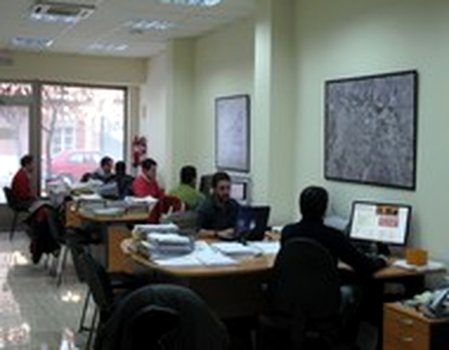

Gestión catastral
Tramitación y tratamiento técnico de expedientes y alteraciones catastrales.
R&M CATASTRALES
Servicios técnicos especializados en gestión catastral, cartografía, actualización de callejeros y trabajos de campo, orientados principalmente a la colaboración con Administraciones Públicas.
Tramitación y tratamiento técnico de expedientes y alteraciones catastrales.
Actualización cartográfica, documentación gráfica, revisión de vías y numeración.
Comprobación de la realidad física de los inmuebles y toma de datos sobre el terreno.
ESPECIALIZACIÓN TÉCNICA CATASTRAL
R&M Catastrales combina experiencia, medios técnicos especializados y procedimientos de control para el tratamiento coordinado de información gráfica, alfanumérica y documental.
Contacte con R&M CatastralesEMPRESA
Experiencia técnica, conocimiento del territorio y procedimientos de trabajo orientados a la conservación y actualización de la información catastral.
Revisiones y Mantenimientos Catastrales desarrolla trabajos especializados de gestión, conservación y actualización del Catastro Inmobiliario, prestando asistencia técnica principalmente a Administraciones Públicas.
Nuestra actividad comprende el tratamiento de información gráfica y alfanumérica, la tramitación de expedientes catastrales, la actualización de cartografía y callejeros, los trabajos de campo y la asistencia técnica especializada.
R&M Catastrales cuenta con un equipo especializado en trabajos catastrales, organizado mediante dirección técnica, personal técnico y procedimientos internos de supervisión y control.
Los trabajos se desarrollan mediante procedimientos de planificación, tratamiento técnico y control de calidad, combinando comprobaciones documentales, gráficas y alfanuméricas con herramientas informáticas especializadas.
El objetivo es garantizar la coherencia entre la documentación, la información catastral y la realidad física de los inmuebles antes de la finalización de los trabajos.

ÁMBITOS DE ACTUACIÓN
Servicios especializados para la conservación y actualización de la información catastral, adaptados al alcance y procedimiento de cada encargo.
Recepción, análisis, comprobación y tramitación de expedientes catastrales, así como tratamiento de la información gráfica y alfanumérica necesaria para su resolución.
Tramitación de declaraciones catastrales por obra nueva, ampliaciones, reformas, rehabilitaciones, demoliciones, cambios de uso y otras modificaciones de las características físicas o económicas de los inmuebles.
Tramitación de cambios de titularidad y demás modificaciones de los datos jurídicos de los inmuebles, incluyendo altas, bajas, cotitularidades y otras alteraciones derivadas de la documentación aportada.
Elaboración, actualización y tratamiento de cartografía catastral y documentación gráfica. Confección y digitalización de planos y croquis catastrales, actualización de parcelarios y preparación de documentación gráfica en formatos normalizados por la Dirección General del Catastro.
Revisión, depuración y actualización de callejeros municipales, incluyendo altas y modificaciones de vías, asignación y corrección de numeración de inmuebles y adecuación de la información a la realidad física existente.
Comprobación y toma de datos sobre los inmuebles cuando la documentación disponible no permita definir suficientemente su situación catastral. Contraste de la información catastral con la realidad física, obtención de fotografías y toma de datos sobre superficies, usos, tipologías, antigüedad, estado de conservación y demás características necesarias para la correcta definición del inmueble.
Informe de validación gráfica de parcelario.
Informe de ubicación de construcciones.
Informe de identidad gráfica.
Atención y asistencia al ciudadano en materia catastral, dentro del ámbito de los servicios contratados por las Administraciones Públicas. Información sobre procedimientos y expedientes catastrales, asistencia en la cumplimentación de declaraciones y solicitudes y orientación sobre las actuaciones necesarias para su tramitación.
TRABAJOS DE CAMPO
Comprobación directa de la realidad física de los inmuebles como complemento de la información catastral y documental disponible.
Cuando la documentación existente no permite definir suficientemente un inmueble o resulta necesario verificar sus características, nuestros técnicos realizan trabajos de campo para contrastar la información catastral con la realidad física existente.
Durante las visitas se realizan las comprobaciones necesarias y se obtiene la información que permita completar correctamente la actuación catastral.
ADMINISTRACIONES PÚBLICAS
R&M Catastrales ha desarrollado trabajos especializados de gestión, conservación y mantenimiento catastral para distintas Administraciones Locales, adaptando los procedimientos técnicos a las necesidades y características de cada municipio.
La relación que se muestra a continuación recoge las administraciones, entidades y trabajos incluidos en la experiencia aportada.
EXPERIENCIA
Relación de trabajos y entidades incluida en la documentación de experiencia aportada.
Trabajos de mantenimiento de I.B.I. Rústica y/o Urbana.
Entidades municipales incluidas en la relación aportada.
Trabajos de asistencia técnica y actualización catastral.
Municipios incluidos en la relación aportada.
Municipios incluidos en la relación aportada.
CONTACTO Y CONSULTAS
Puede contactar directamente con nosotros o enviarnos una consulta mediante el formulario. Si para atenderla fuera necesario aportar documentación, nos pondremos en contacto con usted para indicarle cómo proceder.
Para información sobre nuestros servicios y prestaciones, puede ponerse en contacto con R&M Catastrales.
CALLEJERO MUNICIPAL
Actualización y mantenimiento de la información cartográfica y del callejero municipal. Realizamos trabajos de revisión y depuración de vías y numeración de inmuebles, contrastando la información existente con la realidad física.
SERVICIO
Actuaciones específicas para mantener actualizadas las vías y la numeración municipal y resolver las incidencias que afectan a su identificación.
Inventario y revisión de vías, tramos y denominaciones existentes en la información municipal.
Actualización de la numeración asignada a los inmuebles conforme a la información disponible.
Preparación y tramitación de los expedientes CNOT vinculados a la numeración del callejero.
Comprobación de la correspondencia de las direcciones con la información utilizada en la gestión del IBI.
Uso de cartografía de apoyo cuando sea necesaria para identificar una vía, parcela o inmueble.
Identificación de errores, omisiones o discordancias que deban corregirse.
El trabajo comienza con la recopilación y revisión de las fuentes municipales y de la documentación disponible.
A partir de ese contraste se documentan las incidencias y se preparan las modificaciones necesarias para su tramitación.
Una vez comprobados los datos, se preparan las actuaciones necesarias para actualizar la información y mantener una correspondencia adecuada entre el callejero, Catastro y la información tributaria municipal.
Reunir la información municipal y las fuentes de referencia.
Comparar vías, numeración y localización de los inmuebles.
Registrar las incidencias y preparar los cambios necesarios.
Aplicar el procedimiento correspondiente a cada modificación.
CARTOGRAFÍA Y CALLEJERO
Comparación gráfica entre la numeración existente y la propuesta resultante de los trabajos de revisión y actualización del callejero.